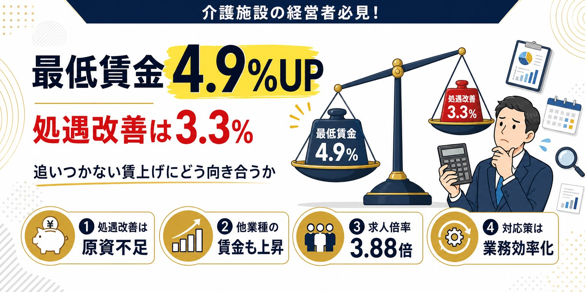

2026年度(令和8年度)の最低賃金改定の「目安」が、2026年7月28日に公表されました。全国加重平均額は+55円の1,176円です。ただしこれはあくまで国が示す目安であり、過去3年の実績を見ると、都道府県の最終決定でこれを上回るケースが年々増えています。今回は、目安の内容と「目安超え」の実績データ、目安どおりに引き上げられた場合の主要都道府県の試算額、そして最低賃金の影響を受けやすい業種について整理します。
2026年度最低賃金、目安は+55円・全国加重平均1,176円
2026年度の最低賃金改定について、7月28日に中央最低賃金審議会が「目安」を取りまとめました。全国加重平均額は、現行の1,121円から55円引き上げの1,176円、引き上げ率にして4.9%です(出典:厚生労働省「令和8年度地域別最低賃金額改定の目安について」、2026年7月28日)。
引き上げ幅は全国一律ではなく、都道府県をA・B・Cの3ランクに分けて示されます。2026年度は、大都市圏を中心とするAランク(埼玉・千葉・東京・神奈川・愛知・大阪の6都府県)が+54円、それ以外のBランク(28道府県)・Cランク(13県)が+56円という結果でした。地方圏(B・Cランク)が大都市圏(Aランク)の引き上げ額を上回るのは異例で、地域間の賃金格差を縮める狙いがあるとみられます。
なお、引き上げ額・引き上げ率とも、6年ぶりに前年度(+66円、+6.3%)を下回りました。政府が掲げる「2020年代に全国平均1,500円」という目標のペースからは、やや後退した「現実路線」の結果とも報じられています。
過去3年、目安を上回る決定が続いている
ここで注目したいのが、直近3年間の実績です。中央最低賃金審議会が示す「目安」に対し、都道府県の最終決定(地方最低賃金審議会の答申)は、近年一貫して目安を上回って決まっています。
| 年度 | 目安(全国加重平均) | 確定額(全国加重平均) | 目安を上回った都道府県数 |
|---|---|---|---|
| 令和5年度(2023) | 1,002円 | 1,004円 | 24県 |
| 令和6年度(2024) | 1,054円 | 1,055円 | 27県 |
| 令和7年度(2025) | 1,118円 | 1,121円 | 39道府県 |
| 令和8年度(2026) | 1,176円(目安) | 8月以降に決定 | ― |
全国加重平均そのものが3年連続で目安を上回っただけでなく、目安を超える引き上げを行った都道府県の数も24県→27県→39道府県と、年々増加しています。令和7年度は全都道府県の8割以上が目安を超える決定をしました。引き上げ幅は都道府県ごとに差があり、令和7年度は63円(目安どおり)から82円まで分布しています。
コンサルタントとして強調しておきたいのは、この傾向が続けば、2026年度も全国加重平均1,176円という数字は「最低ライン」であり、実際の決定額はこれを上回る可能性が高いという点です。目安の発表段階で試算を止めず、上振れを織り込んで人件費への影響を見積もっておくことをお勧めします。
決定プロセス：都道府県の審議→告示→10月頃の適用
ここで整理しておきたいのは、7月28日に決まったのはあくまで国(中央最低賃金審議会)が示す「目安」であり、法的な拘束力はないという点です。実際の最低賃金額は、このあと各都道府県の地方最低賃金審議会が、目安を参考にしながら地域の物価・経済状況・労使双方の意見等を踏まえて審議し、決定します。
都道府県ごとの決定額が固まった後は、官報等での告示を経て、例年10月上旬から順次適用が始まります。2025年度は東京都が10月3日、大阪府が10月16日から適用されました。自事業所の所在都道府県の最終決定額は、8月以降の公式発表で必ず確認してください。
目安どおりに引き上げられた場合、主要都道府県はいくらになるか
目安どおりに引き上げが行われた場合、主な都道府県の最低賃金は下表のとおりです。現行額は2025年度(令和7年度)の確定額、目安後の金額はランク別の目安額(Aランク+54円、Cランク+56円)を単純加算した参考値であり、実際の決定額とは異なる場合があります。
| 都道府県 | ランク | 現行(2025年度) | 目安どおりの場合 |
|---|---|---|---|
| 全国加重平均 | - | 1,121円 | 1,176円 |
| 東京都 | A | 1,226円 | 1,280円 |
| 神奈川県 | A | 1,225円 | 1,279円 |
| 大阪府 | A | 1,177円 | 1,231円 |
| 埼玉県 | A | 1,141円 | 1,195円 |
| 千葉県 | A | 1,140円 | 1,194円 |
| 愛知県 | A | 1,140円 | 1,194円 |
| 高知・宮崎・沖縄 | C | 1,023円 | 1,079円 |
コンサルタントとして付け加えると、上表の「目安どおりの場合」はあくまで参考値であり、前章で見たとおり、実際の決定額はこれを上回る可能性があります。自社の時給がすでに現行の最低賃金にどれだけ近いかによって、今回の改定へのインパクトは大きく変わります。目安の発表があった今の段階から、上表の金額を「上限」ではなく「最低限」として、自社の該当職種の時給が下回らないか、やや厳しめに確認しておくことをお勧めします。
最低賃金近くで働く人が多い業種
最低賃金の引き上げは、全業種に一律の影響を与えるわけではありません。厚生労働省「令和7年賃金構造基本統計調査」でも、宿泊業・飲食サービス業が産業別で最も低い賃金水準となっており、最低賃金改定の影響を受けやすい産業とされています。
ニッセイ基礎研究所の分析(賃金構造基本統計調査に基づく、短時間労働者の職業別1時間当たり所定内給与額の比較)によれば、分析対象145職業のうち63職業(43.4%)が「最低賃金1,500円」の水準を下回っており、こうした低賃金職業は生産工程従事者やサービス職業従事者に集中していると指摘されています。また、最低賃金近傍で働く労働者の約3分の2(67.7%)を女性が占めているという特徴も報告されています。
飲食店のホール・厨房スタッフ、コンビニ・小売店の販売員、警備、清掃、軽作業といった、資格を問わず就業しやすい仕事ほど、最低賃金の引き上げの影響を直接的に受けやすい構造です。介護・保育等のエッセンシャルワーカーも、この分析の対象職業に含まれています。
介護業界への影響は、処遇改善加算だけでは吸収しきれない
介護業界も、この「最低賃金の影響を受けやすい業種」の一つです。ただし介護には他業種と異なる特有の事情があります。介護報酬という公定価格に縛られているため、他業種のように人件費の上昇分を利用料に転嫁できない、という制約です。しかも本記事で見たとおり、最低賃金は目安の段階で語られる数字より、実際にはさらに上振れする可能性があります。

介護施設を経営されている方へ
処遇改善加算の理論上の上限は6.3%、しかし実際に多くの事業所に効いてくる部分は3.3%。最低賃金の上昇率4.9%(しかも上振れの可能性あり)に、この原資は本当に足りるのか、現場目線で検証しています。
処遇改善加算だけでは追いつかない理由を読む →まとめ
2026年度の最低賃金は、目安の段階で全国加重平均+55円・1,176円という結果になりました。しかし過去3年の実績を見る限り、これはあくまで「最低ライン」と捉えるべきです。全国加重平均そのものも、目安を上回る都道府県の数も、年々増加傾向にあります。8月以降の都道府県ごとの発表では、目安を上回る決定がなされる可能性を織り込んでおく必要があります。
最低賃金近くで人を雇用している事業者にとっては、業種を問わず人件費の上昇は避けられません。目安どおりの金額を「上限」ではなく「最低限」として、やや厳しめに人件費への影響を試算しておくことをお勧めします。
賃金戦略を含めた経営体制の見直しについてお悩みの場合は、経営コンサルタントとしてお気軽にご相談ください。
参考
・令和８年度地域別最低賃金額改定の目安について｜厚生労働省(2026年7月28日)
・最低賃金の全国平均1176円に 26年度目安、55円引き上げ｜日本経済新聞(2026年7月28日)
・地域別最低賃金の全国一覧｜厚生労働省
・令和７年度の地域別最低賃金改定について｜厚生労働省
・最低賃金の目安、全国平均1118円に 63円上げ全都道府県1000円超す｜日本経済新聞(2025年7月)
・令和7年度の地域別最低賃金 全都道府県が答申 39道府県で目安超え｜社会保険労務士PSRネットワーク
・全国平均は51円増の1,055円に、16都道府県が1,000円を超える｜労働政策研究・研修機構(JILPT)
・最低賃金の全国平均1004円に 2023年度、地方中心に24県目安超え｜日本経済新聞
・最低賃金1500円で変わる職業地図－影響を最も受ける職業は何か－｜ニッセイ基礎研究所
※本記事は一般的な情報提供を目的としたものです。2026年度の最低賃金は、本記事公開時点(2026年8月2日)では「目安」の段階であり、都道府県ごとの最終決定額ではありません。必ず自事業所が指定を受けている都道府県の最新の公式発表をご確認ください。